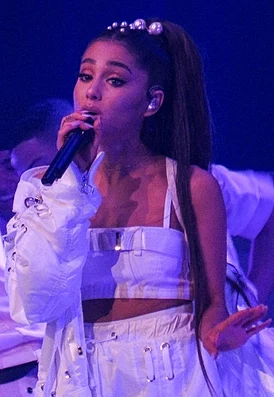

Гранде впервые упомянула этот трек в музыкальном видео для песни «Thank U, Next», в котором на табличке автомобиля, в котором она ехала, была надпись"7 RINGS".
В США сингл «7 Rings» дебютировал 2 февраля 2019 года и сразу на первом месте хит-парада Billboard Hot 100. Он стал вторым чарттоппером Гранде за год и в карьере (первым был «Thank U, Next»), а также 33-м дебютом на первом месте в истории хит-парада. Одновременно сингл возглавил чарты Streaming Songs (85,3 млн стримов) и Digital Song Sales (96,000 загрузок). Гранде стала пятым исполнителем в истории с несколькими дебютами на вершине после таких музыкантов как Мэрайя Кэри , Джастин Бибер , Дрейк и Бритни Спирс. Но Гранде первый музыкант в истории Hot 100, у которого все первые два чарттоппера сразу дебютировали на высшей позиции[6]. «7 Rings» сохранив четвёртую неделю первое место, позволил Гранде повторить исторический рекорд полувековой давности. Сразу три её сингла были на первых трёх местах чарта в одну неделю: на № 2 дебютировал «Break Up with Your Girlfriend, I'm Bored» и на № 3 находился «Thank U, Next». Впервые этого достижения в 1964 году добилась британская группа The Beatles.
В чарте с датой выхода 30 марта 2019 года сингл «7 Rings» певицы Арианы Гранде 7 недель возглавлял американский хит-парад. С учётом того, что ранее хит «Thank U, Next» уже был 7 недель на вершине чарта, то это значит, что певица стал одной из 20 исполнителей за всю историю у которых было не менее двух хитов, которые продержались на первом месте по семь и более недель. Лидирует с 5 такими суперхитами на № 1 с 7+ недель на вершине канадский рэпер Дрейк. Далее идут: 4 суперхита (Мэрайя Кэри, Рианна), 3 (Бейонсе, Boyz II Men, Эминем), 2 (50 Cent, Адель, The Beatles, The Black Eyed Peas, Ариана Гранде, Джанет Джексон, Майкл Джексон, Jay-Z, Maroon 5, Nelly, Santana, T.I., Usher, Фаррелл Уильямс)[8].
В Великобритании сингл «7 Rings» стал четвёртым хитом Гранде на первом месте британского хит-парад, одновременно поставив рекорд по наибольшему числу стримов в неделю (16,9 млн)
1 страница5 страница